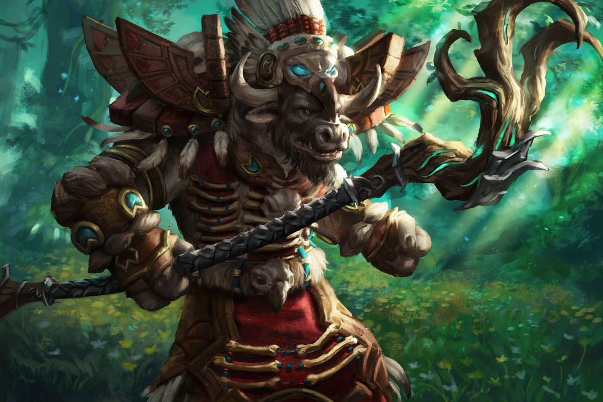
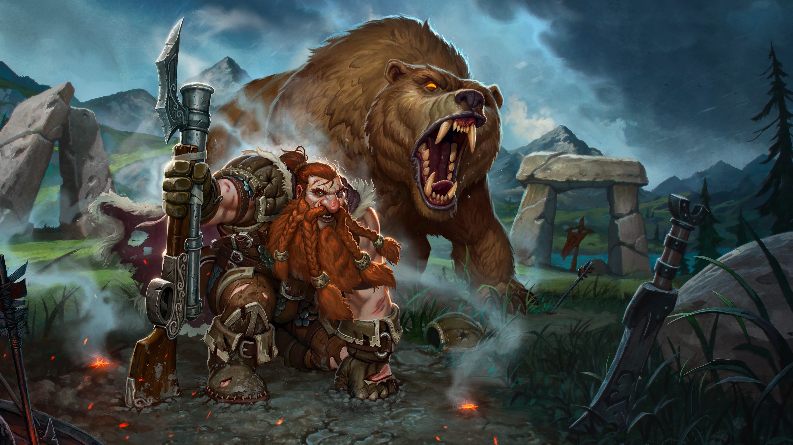
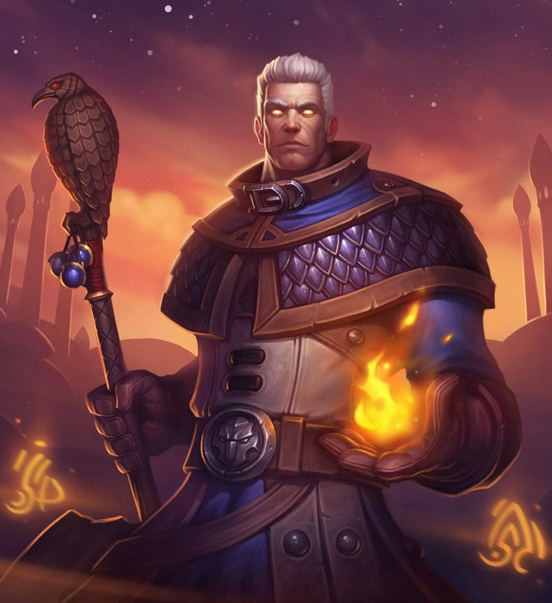
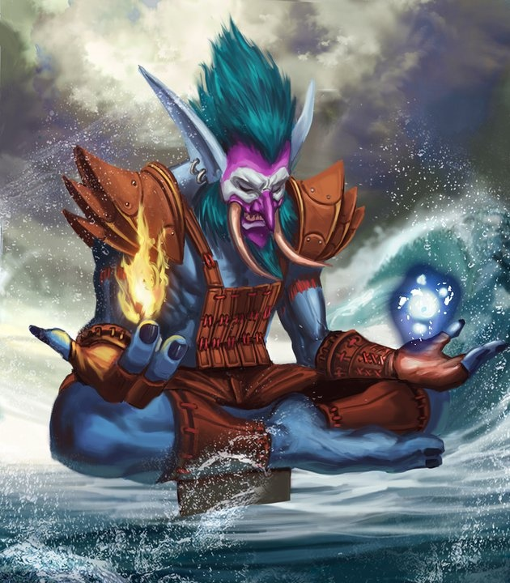
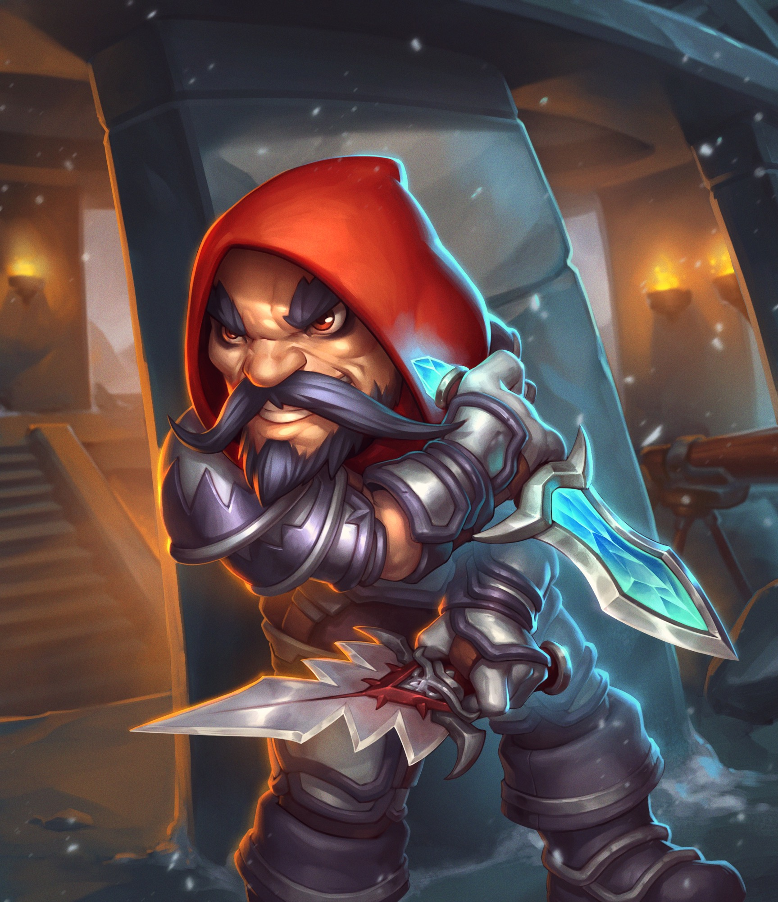
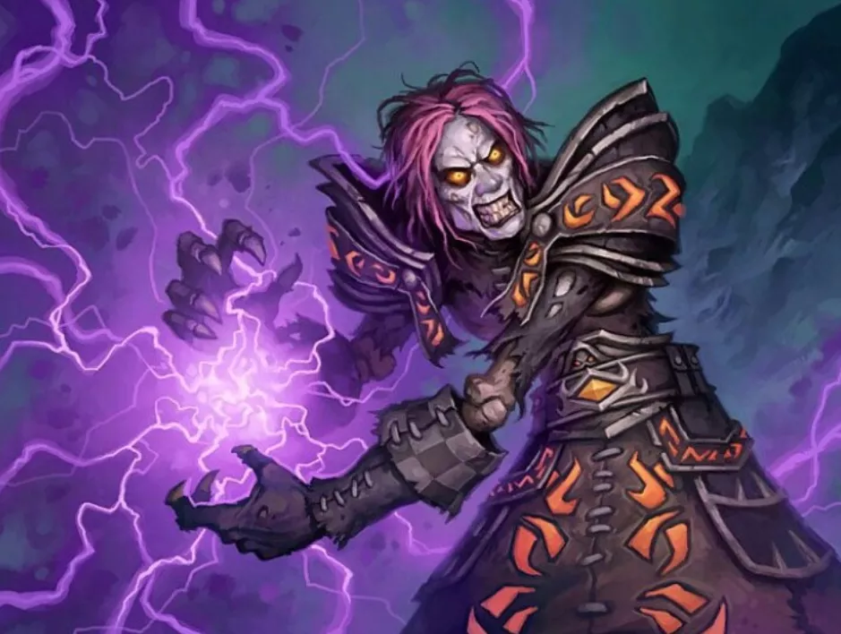

Guerreiro

Gladiadores ferozes e mestres de armas corpo a corpo, o Guerreiro é uma classe de Tanque ou DPS baseada em corpo a corpo em World of Warcraft. O Guerreiro tem acesso a três Especializações diferentes, duas das quais são destinadas a causar dano (Armas e Fúria) e a terceira sendo dedicada a Tanque (Proteção). Independentemente da Especialização ou estilo de jogo, todos os Guerreiros usam a Fúria como um recurso.
Druida
Protetores da natureza, capazes de mudar de forma e aproveitar poderes celestiais, o Druida é a classe mais versátil em World of Warcraft. Os Druidas podem ser jogados como todos os três papéis da santíssima trindade; Tanque/Melee DPS (Feral), Curandeiro (Restauração) e DPS (Equilíbrio). Da mesma forma, os Druidas também têm os recursos mais variados para suas mecânicas de classe e são totalmente dependentes da forma em que estão atualmente. A Forma de Urso usa Fúria, a Forma de Gato usa Energia, e a Forma de Moonkin e Druida usam Mana.
Caçador
Domador de feras e com uma forte conexão com a natureza, o Hunter é uma classe corpo a corpo e de longo alcance em World of Warcraft. Hunter pode ser jogado de três maneiras diferentes, no entanto, todas as três se enquadram na categoria de DPS; Beast Mastery, Marksmanship e Survival. Independentemente da especialização ou estilo de jogo, todos os Hunters usam Mana como um recurso.
Mago
O epítome da fantasia do mago e capaz de aproveitar a magia elemental para destruir seus inimigos, o Mago é uma classe baseada em conjurador em World of Warcraft. O Mago vem em três sabores, todos eles focando em um estilo de jogo excêntrico de DPS; Arcano, Gelo e Fogo. Independentemente da Especialização ou estilo de jogo, todos os Magos usam Mana como um recurso.
Paladino
Protetores de aliados e devotos seguidores da fé, o Paladino pode ser jogado como uma classe corpo a corpo ou baseada em conjurador em World of Warcraft. Com todas essas opções de estilo de jogo, vêm três especializações nas quais os Paladinos podem se especializar; Holy é jogado como um healer, Protection é jogado como um Tank, Retribution é jogado como um DPS. Independentemente da especialização ou estilo de jogo, todos os Paladinos usam Mana como um recurso
Xamã
Guerreiros espirituais, totalmente sintonizados com a natureza e seus elementos, o Shaman é uma classe incrivelmente versátil de conjurador ou de combate corpo a corpo em World of Warcraft. O Priest tem acesso a três especializações diferentes, duas das quais são destinadas a DPS (Elemental e Enhancement) e a terceira é dedicada à Healing (Restoration). Independentemente da especialização ou estilo de jogo, todos os Xamã usam Mana como recurso.
Sacerdote
Praticantes da fé, controlando aspectos tanto da Luz quanto do Vazio, o Sacerdote é uma classe de Cura ou DPS baseada em conjurador em World of Warcraft. O Sacerdote tem acesso a três Especializações diferentes, duas das quais são destinadas à cura (Disciplina e Sagrado) e a terceira sendo dedicada ao DPS (Sombra). Independentemente da Especialização ou estilo de jogo, todos os Sacerdotes usam Mana como um recurso.
Ladino
Mestres da furtividade e usuários adeptos de todos os tipos de veneno, o Rogue é uma classe de DPS baseada em combate corpo a corpo em World of Warcraft. Dependendo de como você prefere jogar o jogo ou da fantasia de classe que está procurando, o Rogue vem com três especializações: Assassinato, Combate e Sutileza. Independentemente da especialização ou estilo de jogo, todos os Rogues usam Energia e Pontos de Combo como um recurso.
Bruxo
Mestre das artes das trevas e invocador de demônios, o Warlock é uma classe de DPS baseada em conjuradores em World of Warcraft. Bruxos tem acesso a três especializações diferentes, e todas as três são dedicadas a um estilo diferente de DPS: Aflição, Demonologia e Destruição. Independentemente da especialização ou estilo de jogo, todos os bruxos usam Mana como um recurso. Ao contrário de outros conjuradores, os Warlocks são capazes de usar sua saúde como um recurso, gastando-a em magias perigosas em sua ânsia por poder cada vez maior.